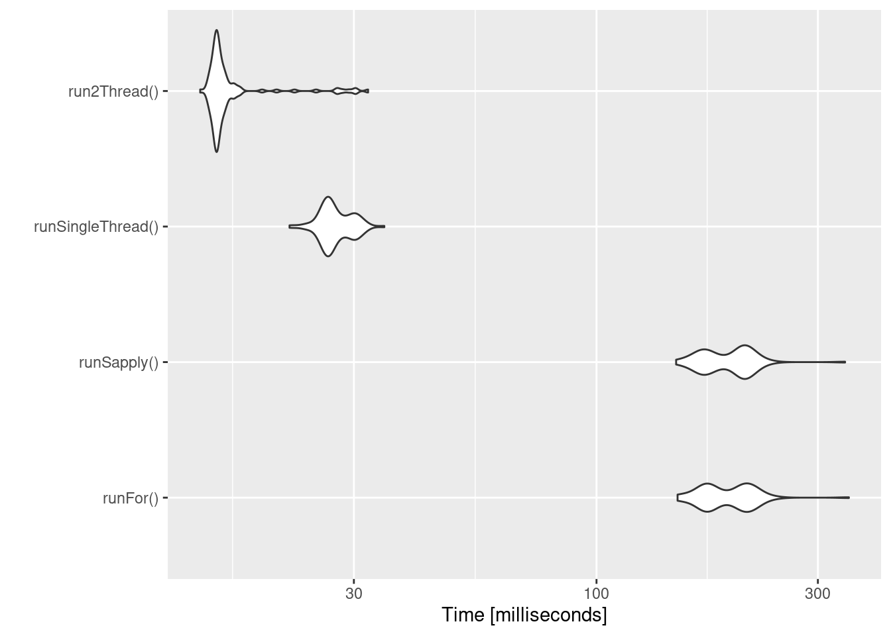
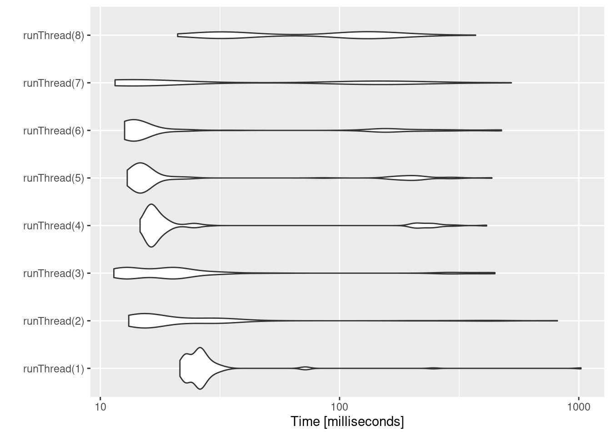

Chapter 13 Advanced & Miscellaneous Topics
This covers advanced or miscellaneous topics in RxODE
13.1 Covariates in RxODE
13.1.1 Individual Covariates
If there is an individual covariate you wish to solve for you may specify it by the iCov dataset:
library(RxODE)
library(units)
library(xgxr)
mod3 <- RxODE({
KA=2.94E-01;
#### Clearance with individuals
CL=1.86E+01 * (WT / 70) ^ 0.75;
V2=4.02E+01;
Q=1.05E+01;
V3=2.97E+02;
Kin=1;
Kout=1;
EC50=200;
#### The linCmt() picks up the variables from above
C2 = linCmt();
Tz= 8
amp=0.1
eff(0) = 1 ## This specifies that the effect compartment starts at 1.
d/dt(eff) = Kin - Kout*(1-C2/(EC50+C2))*eff;
})
ev <- et(amount.units="mg", time.units="hours") %>%
et(amt=10000, cmt=1) %>%
et(0,48,length.out=100) %>%
et(id=1:4);
set.seed(10)
#### Now use iCov to simulate a 4-id sample
r1 <- solve(mod3, ev,
### Create individual covariate data-frame
iCov=data.frame(id=1:4, WT=rnorm(4, 70, 10)),
### in this case it would be useful to keep the WT in the output dataset
keep="WT")
print(r1)#> ______________________________ Solved RxODE object _____________________________
#> -- Parameters ($params): -------------------------------------------------------
#> # A tibble: 4 x 11
#> id KA WT V2 Q V3 Kin Kout EC50 Tz amp
#> <fct> <dbl> <dbl> <dbl> <dbl> <dbl> <dbl> <dbl> <dbl> <dbl> <dbl>
#> 1 1 0.294 70.2 40.2 10.5 297 1 1 200 8 0.1
#> 2 2 0.294 68.2 40.2 10.5 297 1 1 200 8 0.1
#> 3 3 0.294 56.3 40.2 10.5 297 1 1 200 8 0.1
#> 4 4 0.294 64.0 40.2 10.5 297 1 1 200 8 0.1
#> -- Initial Conditions ($inits): ------------------------------------------------
#> eff
#> 1
#> -- First part of data (object): ------------------------------------------------
#> # A tibble: 400 x 6
#> id time CL C2 eff WT
#> <int> [h] <dbl> <dbl> <dbl> <dbl>
#> 1 1 0.0000000 18.6 0 1 70.2
#> 2 1 0.4848485 18.6 27.8 1.03 70.2
#> 3 1 0.9696970 18.6 43.7 1.08 70.2
#> 4 1 1.4545455 18.6 51.7 1.13 70.2
#> 5 1 1.9393939 18.6 54.7 1.18 70.2
#> 6 1 2.4242424 18.6 54.5 1.21 70.2
#> # ... with 394 more rows
#> ________________________________________________________________________________plot(r1, C2, log="y")#> Warning: Transformation introduced infinite values in continuous y-axis13.1.2 Time Varying Covariates
Covariates are easy to specify in RxODE, you can specify them as a variable. Time-varying covariates, like clock time in a circadian rhythm model, can also be used. Extending the indirect response model already discussed, we have:
library(RxODE)
library(units)
mod3 <- RxODE({
KA=2.94E-01;
CL=1.86E+01;
V2=4.02E+01;
Q=1.05E+01;
V3=2.97E+02;
Kin0=1;
Kout=1;
EC50=200;
#### The linCmt() picks up the variables from above
C2 = linCmt();
Tz= 8
amp=0.1
eff(0) = 1 ## This specifies that the effect compartment starts at 1.
#### Kin changes based on time of day (like cortosol)
Kin = Kin0 +amp *cos(2*pi*(ctime-Tz)/24)
d/dt(eff) = Kin - Kout*(1-C2/(EC50+C2))*eff;
})
ev <- eventTable(amount.units="mg", time.units="hours") %>%
add.dosing(dose=10000, nbr.doses=1, dosing.to=1) %>%
add.sampling(seq(0,48,length.out=100));
#### Create data frame of 8 am dosing for the first dose This is done
#### with base R but it can be done with dplyr or data.table
ev$ctime <- (ev$time+set_units(8,hr)) %% 24Now there is a covariate present in the event dataset, the system can be solved by combining the dataset and the model:
r1 <- solve(mod3, ev, covs_interpolation="linear")
print(r1)
#> ______________________________ Solved RxODE object _____________________________
#> -- Parameters ($params): -------------------------------------------------------
#> KA CL V2 Q V3 Kin0 Kout
#> 0.294000 18.600000 40.200000 10.500000 297.000000 1.000000 1.000000
#> EC50 Tz amp pi
#> 200.000000 8.000000 0.100000 3.141593
#> -- Initial Conditions ($inits): ------------------------------------------------
#> eff
#> 1
#> -- First part of data (object): ------------------------------------------------
#> # A tibble: 100 x 4
#> time C2 Kin eff
#> [h] <dbl> <dbl> <dbl>
#> 1 0.0000000 0 1.1 1
#> 2 0.4848485 27.8 1.10 1.07
#> 3 0.9696970 43.7 1.10 1.15
#> 4 1.4545455 51.8 1.09 1.22
#> 5 1.9393939 54.8 1.09 1.27
#> 6 2.4242424 54.6 1.08 1.30
#> # ... with 94 more rows
#> ________________________________________________________________________________When solving ODE equations, the solver may sample times outside of the
data. When this happens, this ODE solver can use linear interpolation
between the covariate values. It is equivalent to R’s approxfun with
method="linear".
plot(r1,C2, ylab="Central Concentration")
plot(r1,eff) + ylab("Effect") + xlab("Time");Note that the linear approximation in this case leads to some kinks in the solved system at 24-hours where the covariate has a linear interpolation between near 24 and near 0. While linear seems reasonable, cases like clock time make other interpolation methods more attractive.
In RxODE the default covariate interpolation is be the last
observation carried forward (locf), or constant approximation. This is
equivalent to R’s approxfun with method="constant".
r1 <- solve(mod3, ev,covs_interpolation="constant")
print(r1)
#> ______________________________ Solved RxODE object _____________________________
#> -- Parameters ($params): -------------------------------------------------------
#> KA CL V2 Q V3 Kin0 Kout
#> 0.294000 18.600000 40.200000 10.500000 297.000000 1.000000 1.000000
#> EC50 Tz amp pi
#> 200.000000 8.000000 0.100000 3.141593
#> -- Initial Conditions ($inits): ------------------------------------------------
#> eff
#> 1
#> -- First part of data (object): ------------------------------------------------
#> # A tibble: 100 x 4
#> time C2 Kin eff
#> [h] <dbl> <dbl> <dbl>
#> 1 0.0000000 0 1.1 1
#> 2 0.4848485 27.8 1.10 1.07
#> 3 0.9696970 43.7 1.10 1.15
#> 4 1.4545455 51.8 1.09 1.22
#> 5 1.9393939 54.8 1.09 1.27
#> 6 2.4242424 54.6 1.08 1.31
#> # ... with 94 more rows
#> ________________________________________________________________________________which gives the following plots:
plot(r1,C2, ylab="Central Concentration", xlab="Time")plot(r1,eff, ylab="Effect", xlab="Time")In this case, the plots seem to be smoother.
You can also use NONMEM’s preferred interpolation style of next observation carried backward (NOCB):
r1 <- solve(mod3, ev,covs_interpolation="nocb")
print(r1)
#> ______________________________ Solved RxODE object _____________________________
#> -- Parameters ($params): -------------------------------------------------------
#> KA CL V2 Q V3 Kin0 Kout
#> 0.294000 18.600000 40.200000 10.500000 297.000000 1.000000 1.000000
#> EC50 Tz amp pi
#> 200.000000 8.000000 0.100000 3.141593
#> -- Initial Conditions ($inits): ------------------------------------------------
#> eff
#> 1
#> -- First part of data (object): ------------------------------------------------
#> # A tibble: 100 x 4
#> time C2 Kin eff
#> [h] <dbl> <dbl> <dbl>
#> 1 0.0000000 0 1.1 1
#> 2 0.4848485 27.8 1.10 1.07
#> 3 0.9696970 43.7 1.10 1.15
#> 4 1.4545455 51.8 1.09 1.21
#> 5 1.9393939 54.8 1.09 1.27
#> 6 2.4242424 54.6 1.08 1.30
#> # ... with 94 more rows
#> ________________________________________________________________________________which gives the following plots:
plot(r1,C2, ylab="Central Concentration", xlab="Time")
plot(r1,eff, ylab="Effect", xlab="Time")13.2 Shiny and RxODE
13.2.1 Facilities for generating R shiny applications
An example of creating an
R shiny application to interactively
explore responses of various complex dosing regimens is available at
http://qsp.engr.uga.edu:3838/RxODE/RegimenSimulator. Shiny
applications like this one may be programmatically created with the
experimental function genShinyApp.template().
The above application includes widgets for varying the dose, dosing regimen, dose cycle, and number of cycles.
genShinyApp.template(appDir = "shinyExample", verbose=TRUE)
library(shiny)
runApp("shinyExample")
13.2.2 Exploring parameter fits graphically using shiny
An RxODE object can be explored with rxShiny(obj). rxShiny() will also allow you to try
new models to see how they behave.
13.3 Using RxODE with a pipeline
13.3.1 Setting up the RxODE model for the pipeline
In this example we will show how to use RxODE in a simple pipeline.
We can start with a model that can be used for the different simulation workflows that RxODE can handle:
library(RxODE)
Ribba2012 <- RxODE({
k = 100
tkde = 0.24
eta.tkde = 0
kde ~ tkde*exp(eta.tkde)
tkpq = 0.0295
eta.kpq = 0
kpq ~ tkpq * exp(eta.kpq)
tkqpp = 0.0031
eta.kqpp = 0
kqpp ~ tkqpp * exp(eta.kqpp)
tlambdap = 0.121
eta.lambdap = 0
lambdap ~ tlambdap*exp(eta.lambdap)
tgamma = 0.729
eta.gamma = 0
gamma ~ tgamma*exp(eta.gamma)
tdeltaqp = 0.00867
eta.deltaqp = 0
deltaqp ~ tdeltaqp*exp(eta.deltaqp)
prop.err <- 0
pstar <- (pt+q+qp)*(1+prop.err)
d/dt(c) = -kde * c
d/dt(pt) = lambdap * pt *(1-pstar/k) + kqpp*qp -
kpq*pt - gamma*c*kde*pt
d/dt(q) = kpq*pt -gamma*c*kde*q
d/dt(qp) = gamma*c*kde*q - kqpp*qp - deltaqp*qp
#### initial conditions
tpt0 = 7.13
eta.pt0 = 0
pt0 ~ tpt0*exp(eta.pt0)
tq0 = 41.2
eta.q0 = 0
q0 ~ tq0*exp(eta.q0)
pt(0) = pt0
q(0) = q0
})This is a tumor growth model described in Ribba 2012. In this case, we
compiled the model into an R object Ribba2012, though in an RxODE
simulation pipeline, you do not have to assign the compiled model to
any object, though I think it makes sense.
13.3.2 Simulating one event table
Simulating a single event table is quite simple:
- You pipe the RxODE simulation object into an event table object by
et().
- When the events are completely specified, you simply solve the ODE system with
rxSolve(). - In this case you can pipe the output to
plot()to conveniently view the results. - Note for the plot we are only selecting the selecting following:
pt(Proliferative Tissue),q(quiescent tissue)qp(DNA-Damaged quiescent tissue) andpstar(total tumor tissue)
Ribba2012 %>% # Use RxODE
et(time.units="months") %>% # Pipe to a new event table
et(amt=1, time=50, until=58, ii=1.5) %>% # Add dosing every 1.5 months
et(0, 250, by=0.5) %>% # Add some sampling times (not required)
rxSolve() %>% # Solve the simulation
plot(pt, q, qp, pstar) # Plot it, plotting the variables of interest
13.3.3 Simulating multiple subjects from a single event table
13.3.3.1 Simulating with between subject variability
The next sort of simulation that may be useful is simulating multiple
patients with the same treatments. In this case, we will use the
omega matrix specified by the paper:
#### Add CVs from paper for individual simulation
#### Uses exact formula:
lognCv = function(x){log((x/100)^2+1)}
library(lotri)
#### Now create omega matrix
#### I'm using lotri to quickly specify names/diagonals
omega <- lotri(eta.pt0 ~ lognCv(94),
eta.q0 ~ lognCv(54),
eta.lambdap ~ lognCv(72),
eta.kqp ~ lognCv(76),
eta.qpp ~ lognCv(97),
eta.deltaqp ~ lognCv(115),
eta.kde ~ lognCv(70))
omega
#> eta.pt0 eta.q0 eta.lambdap eta.kqp eta.qpp eta.deltaqp
#> eta.pt0 0.6331848 0.0000000 0.0000000 0.0000000 0.0000000 0.0000000
#> eta.q0 0.0000000 0.2558818 0.0000000 0.0000000 0.0000000 0.0000000
#> eta.lambdap 0.0000000 0.0000000 0.4176571 0.0000000 0.0000000 0.0000000
#> eta.kqp 0.0000000 0.0000000 0.0000000 0.4559047 0.0000000 0.0000000
#> eta.qpp 0.0000000 0.0000000 0.0000000 0.0000000 0.6631518 0.0000000
#> eta.deltaqp 0.0000000 0.0000000 0.0000000 0.0000000 0.0000000 0.8426442
#> eta.kde 0.0000000 0.0000000 0.0000000 0.0000000 0.0000000 0.0000000
#> eta.kde
#> eta.pt0 0.0000000
#> eta.q0 0.0000000
#> eta.lambdap 0.0000000
#> eta.kqp 0.0000000
#> eta.qpp 0.0000000
#> eta.deltaqp 0.0000000
#> eta.kde 0.3987761With this information, it is easy to simulate 3 subjects from the model-based parameters:
set.seed(1089)
Ribba2012 %>% # Use RxODE
et(time.units="months") %>% # Pipe to a new event table
et(amt=1, time=50, until=58, ii=1.5) %>% # Add dosing every 1.5 months
et(0, 250, by=0.5) %>% # Add some sampling times (not required)
rxSolve(nSub=3, omega=omega) %>% # Solve the simulation
plot(pt, q, qp, pstar) # Plot it, plotting the variables of interest
Note there are two different things that were added to this simulation:
- nSub to specify how many subjects are in the model
- omega to specify the between subject variability.
13.3.3.2 Simulation with unexplained variability
You can even add unexplained variability quite easily:
Ribba2012 %>% # Use RxODE
et(time.units="months") %>% # Pipe to a new event table
et(amt=1, time=50, until=58, ii=1.5) %>% # Add dosing every 1.5 months
et(0, 250, by=0.5) %>% # Add some sampling times (not required)
rxSolve(nSub=3, omega=omega, sigma=lotri(prop.err ~ 0.05^2)) %>% # Solve the simulation
plot(pt, q, qp, pstar) # Plot it, plotting the variables of interestIn this case we only added the sigma matrix to have unexplained
variability on the pstar or total tumor tissue.
You can even simulate with uncertainty in the theta omega and sigma values if you wish.
13.3.3.3 Simulation with uncertainty in all the parameters (by matrices)
If we assume these parameters came from 95 subjects with 8
observations apiece, the degrees of freedom for the omega matrix would
be 95, and the degrees of freedom of the sigma matrix would be
95*8=760 because 95 items informed the omega matrix, and 760
items informed the sigma matrix.
Ribba2012 %>% # Use RxODE
et(time.units="months") %>% # Pipe to a new event table
et(amt=1, time=50, until=58, ii=1.5) %>% # Add dosing every 1.5 months
et(0, 250, by=0.5) %>% # Add some sampling times (not required)
rxSolve(nSub=3, nStud=3, omega=omega, sigma=lotri(prop.err ~ 0.05^2),
dfSub=760, dfObs=95) %>% # Solve the simulation
plot(pt, q, qp, pstar) # Plot it, plotting the variables of interestOften in simulations we have a full covariance matrix for the fixed
effect parameters. In this case, we do not have the matrix, but it
could be specified by thetaMat.
While we do not have a full covariance matrix, we can have information about the diagonal elements of the covariance matrix from the model paper. These can be converted as follows:
rseVar <- function(est, rse){
return(est*rse/100)^2
}
thetaMat <- lotri(tpt0 ~ rseVar(7.13,25),
tq0 ~ rseVar(41.2,7),
tlambdap ~ rseVar(0.121, 16),
tkqpp ~ rseVar(0.0031, 35),
tdeltaqp ~ rseVar(0.00867, 21),
tgamma ~ rseVar(0.729, 37),
tkde ~ rseVar(0.24, 33)
);
thetaMat
#> tpt0 tq0 tlambdap tkqpp tdeltaqp tgamma tkde
#> tpt0 1.7825 0.000 0.00000 0.000000 0.0000000 0.00000 0.0000
#> tq0 0.0000 2.884 0.00000 0.000000 0.0000000 0.00000 0.0000
#> tlambdap 0.0000 0.000 0.01936 0.000000 0.0000000 0.00000 0.0000
#> tkqpp 0.0000 0.000 0.00000 0.001085 0.0000000 0.00000 0.0000
#> tdeltaqp 0.0000 0.000 0.00000 0.000000 0.0018207 0.00000 0.0000
#> tgamma 0.0000 0.000 0.00000 0.000000 0.0000000 0.26973 0.0000
#> tkde 0.0000 0.000 0.00000 0.000000 0.0000000 0.00000 0.0792Now we have a thetaMat to represent the uncertainty in the theta
matrix, as well as the other pieces in the simulation. Typically you
can put this information into your simulation with the thetaMat
matrix.
With such large variability in theta it is easy to sample a negative
rate constant, which does not make sense. For example:
Ribba2012 %>% # Use RxODE
et(time.units="months") %>% # Pipe to a new event table
et(amt=1, time=50, until=58, ii=1.5) %>% # Add dosing every 1.5 months
et(0, 250, by=0.5) %>% # Add some sampling times (not required)
rxSolve(nSub=2, nStud=2, omega=omega, sigma=lotri(prop.err ~ 0.05^2),
thetaMat=thetaMat,
dfSub=760, dfObs=95) %>% # Solve the simulation
plot(pt, q, qp, pstar) # Plot it, plotting the variables of interest
#> unhandled error message: EE:[lsoda] 70000 steps taken before reaching tout
#> @(lsoda.c:750
#> Warning message:
#> In rxSolve_(object, .ctl, .nms, .xtra, params, events, inits, setupOnly = .setupOnly) :
#> Some ID(s) could not solve the ODEs correctly; These values are replaced with NA.To correct these problems you simply need to use a truncated
multivariate normal and specify the reasonable ranges for the
parameters. For theta this is specified by thetaLower and
thetaUpper. Similar parameters are there for the other matrices:
omegaLower, omegaUpper, sigmaLower and sigmaUpper. These may
be named vectors, one numeric value, or a numeric vector matching the
number of parameters specified in the thetaMat matrix.
In this case the simulation simply has to be modified to have
thetaLower=0 to make sure all rates are positive:
Ribba2012 %>% # Use RxODE
et(time.units="months") %>% # Pipe to a new event table
et(amt=1, time=50, until=58, ii=1.5) %>% # Add dosing every 1.5 months
et(0, 250, by=0.5) %>% # Add some sampling times (not required)
rxSolve(nSub=2, nStud=2, omega=omega, sigma=lotri(prop.err ~ 0.05^2),
thetaMat=thetaMat,
thetaLower=0, # Make sure the rates are reasonable
dfSub=760, dfObs=95) %>% # Solve the simulation
plot(pt, q, qp, pstar) # Plot it, plotting the variables of interest13.3.4 Summarizing the simulation output
While it is easy to use dplyr and data.table to perform your own
summary of simulations, RxODE also provides this ability by the
confint function.
#### This takes a little more time; Most of the time is the summary
#### time.
sim0 <- Ribba2012 %>% # Use RxODE
et(time.units="months") %>% # Pipe to a new event table
et(amt=1, time=50, until=58, ii=1.5) %>% # Add dosing every 1.5 months
et(0, 250, by=0.5) %>% # Add some sampling times (not required)
rxSolve(nSub=10, nStud=10, omega=omega, sigma=lotri(prop.err ~ 0.05^2),
thetaMat=thetaMat,
thetaLower=0, # Make sure the rates are reasonable
dfSub=760, dfObs=95) %>% # Solve the simulation
confint(c("pt","q","qp","pstar"),level=0.90); # Create Simulation intervals
sim0 %>% plot() # Plot the simulation intervals
13.3.4.1 Simulating from a data-frame of parameters
While the simulation from matrices can be very useful and a fast way
to simulate information, sometimes you may want to simulate more
complex scenarios. For instance, there may be some reason to believe
that tkde needs to be above tlambdap, therefore these need to be
simulated more carefully. You can generate the data frame in whatever
way you want. The internal method of simulating the new parameters is
exported too.
library(dplyr)
pars <- rxInits(Ribba2012);
pars <- pars[regexpr("(prop|eta)",names(pars)) == -1]
print(pars)
#> k tkde tkpq tkqpp tlambdap tgamma tdeltaqp tpt0
#> 1.00e+02 2.40e-01 2.95e-02 3.10e-03 1.21e-01 7.29e-01 8.67e-03 7.13e+00
#> tq0
#> 4.12e+01
#### This is the exported method for simulation of Theta/Omega internally in RxODE
df <- rxSimThetaOmega(params=pars, omega=omega,dfSub=760,
thetaMat=thetaMat, thetaLower=0, nSub=60,nStud=60) %>%
filter(tkde > tlambdap) %>% as.tbl()
#### You could also simulate more and bind them together to a data frame.
print(df)
#> # A tibble: 2,340 x 16
#> k tkde tkpq tkqpp tlambdap tgamma tdeltaqp tpt0 tq0 eta.pt0 eta.q0
#> <dbl> <dbl> <dbl> <dbl> <dbl> <dbl> <dbl> <dbl> <dbl> <dbl> <dbl>
#> 1 100 2.83 0.0295 0.239 0.683 0.861 1.25 7.67 42.0 0.559 0.136
#> 2 100 2.83 0.0295 0.239 0.683 0.861 1.25 7.67 42.0 0.0465 -0.581
#> 3 100 2.83 0.0295 0.239 0.683 0.861 1.25 7.67 42.0 -0.188 -0.180
#> 4 100 2.83 0.0295 0.239 0.683 0.861 1.25 7.67 42.0 0.321 0.614
#> 5 100 2.83 0.0295 0.239 0.683 0.861 1.25 7.67 42.0 0.0656 -0.232
#> 6 100 2.83 0.0295 0.239 0.683 0.861 1.25 7.67 42.0 0.0194 0.517
#> 7 100 2.83 0.0295 0.239 0.683 0.861 1.25 7.67 42.0 -0.218 0.260
#> 8 100 2.83 0.0295 0.239 0.683 0.861 1.25 7.67 42.0 -0.258 -0.761
#> 9 100 2.83 0.0295 0.239 0.683 0.861 1.25 7.67 42.0 -1.28 -1.34
#> 10 100 2.83 0.0295 0.239 0.683 0.861 1.25 7.67 42.0 -0.495 0.161
#> # ... with 2,330 more rows, and 5 more variables: eta.lambdap <dbl>,
#> # eta.kqp <dbl>, eta.qpp <dbl>, eta.deltaqp <dbl>, eta.kde <dbl>
#### Quick check to make sure that all the parameters are OK.
all(df$tkde>df$tlambdap)
#> [1] TRUE
sim1 <- Ribba2012 %>% # Use RxODE
et(time.units="months") %>% # Pipe to a new event table
et(amt=1, time=50, until=58, ii=1.5) %>% # Add dosing every 1.5 months
et(0, 250, by=0.5) %>% # Add some sampling times (not required)
rxSolve(df)
#### Note this information looses information about which ID is in a
#### "study", so it summarizes the confidence intervals by dividing the
#### subjects into sqrt(#subjects) subjects and then summarizes the
#### confidence intervals
sim2 <- sim1 %>% confint(c("pt","q","qp","pstar"),level=0.90); # Create Simulation intervals
save(sim2, file = file.path(system.file(package = "RxODE"), "pipeline-sim2.rds"), version = 2)
sim2 %>% plot()13.4 Speeding up RxODE
13.4.1 Increasing RxODE speed by multi-subject parallel solving
RxODE originally developed as an ODE solver that allowed an ODE
solve for a single subject. This flexibility is still supported.
The original code from the RxODE tutorial is below:
library(RxODE)
library(microbenchmark)
library(ggplot2)
mod1 <- RxODE({
C2 = centr/V2;
C3 = peri/V3;
d/dt(depot) = -KA*depot;
d/dt(centr) = KA*depot - CL*C2 - Q*C2 + Q*C3;
d/dt(peri) = Q*C2 - Q*C3;
d/dt(eff) = Kin - Kout*(1-C2/(EC50+C2))*eff;
eff(0) = 1
})
#### Create an event table
ev <- et() %>%
et(amt=10000, addl=9,ii=12) %>%
et(time=120, amt=20000, addl=4, ii=24) %>%
et(0:240) ## Add Sampling
nsub <- 100 # 100 sub-problems
sigma <- matrix(c(0.09,0.08,0.08,0.25),2,2) # IIV covariance matrix
mv <- rxRmvn(n=nsub, rep(0,2), sigma) # Sample from covariance matrix
CL <- 7*exp(mv[,1])
V2 <- 40*exp(mv[,2])
params.all <- cbind(KA=0.3, CL=CL, V2=V2, Q=10, V3=300,
Kin=0.2, Kout=0.2, EC50=8)13.4.1.1 For Loop
The slowest way to code this is to use a for loop. In this example
we will enclose it in a function to compare timing.
runFor <- function(){
res <- NULL
for (i in 1:nsub) {
params <- params.all[i,]
x <- mod1$solve(params, ev, cacheEvent=FALSE)
##Store results for effect compartment
res <- cbind(res, x[, "eff"])
}
return(res)
}13.4.1.2 Running with apply
In general for R, the apply types of functions perform better than a
for loop, so the tutorial also suggests this speed enhancement
runSapply <- function(){
res <- apply(params.all, 1, function(theta)
mod1$run(theta, ev, cacheEvent=FALSE)[, "eff"])
}13.4.1.3 Run using a single-threaded solve
You can also have RxODE solve all the subject simultaneously without collecting the results in R, using a single threaded solve.
The data output is slightly different here, but still gives the same information:
runSingleThread <- function(){
solve(mod1, params.all, ev, cores=1, cacheEvent=FALSE)[,c("sim.id", "time", "eff")]
}13.4.1.4 Run a 2 threaded solve
RxODE supports multi-threaded solves, so another option is to have 2
threads (called cores in the solve options, you can see the options
in rxControl() or rxSolve()).
run2Thread <- function(){
solve(mod1, params.all, ev, cores=2, cacheEvent=FALSE)[,c("sim.id", "time", "eff")]
}13.4.1.5 Compare the times between all the methods
Now the moment of truth, the timings:
bench <- microbenchmark(runFor(), runSapply(), runSingleThread(),run2Thread())
print(bench)
#> Unit: milliseconds
#> expr min lq mean median uq max
#> runFor() 171.66903 193.89789 212.88766 213.18487 221.75961 711.36848
#> runSapply() 164.52194 185.30660 209.45871 214.36570 221.65436 409.80491
#> runSingleThread() 25.41322 27.00563 29.38803 28.15468 30.95854 43.76065
#> run2Thread() 15.19482 15.69548 19.96977 16.09511 17.70235 173.92557
#> neval
#> 100
#> 100
#> 100
#> 100
autoplot(bench)
It is clear that the largest jump in performance when using the
solve method and providing all the parameters to RxODE to solve
without looping over each subject with either a for or a sapply.
The number of cores/threads applied to the solve also plays a role in
the solving.
We can explore the number of threads further with the following code:
runThread <- function(n){
solve(mod1, params.all, ev, cores=n, cacheEvent=FALSE)[,c("sim.id", "time", "eff")]
}
bench <- eval(parse(text=sprintf("microbenchmark(%s)",
paste(paste0("runThread(", seq(1, 2 * rxCores()),")"),
collapse=","))))
print(bench)
#> Unit: milliseconds
#> expr min lq mean median uq max neval
#> runThread(1) 23.50649 28.57598 51.47387 30.54450 34.38022 1182.7432 100
#> runThread(2) 14.76052 17.04080 80.13120 19.92848 29.51885 511.9771 100
#> runThread(3) 11.24624 13.37160 47.13239 20.25159 22.24712 345.7806 100
#> runThread(4) 15.75845 17.23134 60.99354 18.23371 24.51697 288.5697 100
#> runThread(5) 13.37044 15.12379 66.48845 16.13006 30.26245 417.1762 100
#> runThread(6) 12.28926 13.81659 71.36020 14.65909 168.92516 355.0117 100
#> runThread(7) 11.64350 12.96044 76.23562 13.65549 159.12109 348.2465 100
#> runThread(8) 20.17716 34.51966 90.65260 40.40148 147.92087 342.0049 100
autoplot(bench)
There can be a suite spot in speed vs number or cores. The system type (mac, linux, windows and/or processor), complexity of the ODE solving and the number of subjects may affect this arbitrary number of threads. 4 threads is a good number to use without any prior knowledge because most systems these days have at least 4 threads (or 2 processors with 4 threads).
13.4.2 A real life example
Before some of the parallel solving was implemented, the fastest way
to run RxODE was with lapply. This is how Rik Schoemaker created
the data-set for nlmixr comparisons, but reduced to run faster
automatic building of the pkgdown website.
library(RxODE)
library(data.table)
#Define the RxODE model
ode1 <- "
d/dt(abs) = -KA*abs;
d/dt(centr) = KA*abs-(CL/V)*centr;
C2=centr/V;
"
#Create the RxODE simulation object
mod1 <- RxODE(model = ode1)
#Population parameter values on log-scale
paramsl <- c(CL = log(4),
V = log(70),
KA = log(1))
#make 10,000 subjects to sample from:
nsubg <- 300 # subjects per dose
doses <- c(10, 30, 60, 120)
nsub <- nsubg * length(doses)
#IIV of 30% for each parameter
omega <- diag(c(0.09, 0.09, 0.09))# IIV covariance matrix
sigma <- 0.2
#Sample from the multivariate normal
set.seed(98176247)
library(MASS)
mv <-
mvrnorm(nsub, rep(0, dim(omega)[1]), omega) # Sample from covariance matrix
#Combine population parameters with IIV
params.all <-
data.table(
"ID" = seq(1:nsub),
"CL" = exp(paramsl['CL'] + mv[, 1]),
"V" = exp(paramsl['V'] + mv[, 2]),
"KA" = exp(paramsl['KA'] + mv[, 3])
)
#set the doses (looping through the 4 doses)
params.all[, AMT := rep(100 * doses,nsubg)]
Startlapply <- Sys.time()
#Run the simulations using lapply for speed
s = lapply(1:nsub, function(i) {
#selects the parameters associated with the subject to be simulated
params <- params.all[i]
#creates an eventTable with 7 doses every 24 hours
ev <- eventTable()
ev$add.dosing(
dose = params$AMT,
nbr.doses = 1,
dosing.to = 1,
rate = NULL,
start.time = 0
)
#generates 4 random samples in a 24 hour period
ev$add.sampling(c(0, sort(round(sample(runif(600, 0, 1440), 4) / 60, 2))))
#runs the RxODE simulation
x <- as.data.table(mod1$run(params, ev))
#merges the parameters and ID number to the simulation output
x[, names(params) := params]
})
#runs the entire sequence of 100 subjects and binds the results to the object res
res = as.data.table(do.call("rbind", s))
Stoplapply <- Sys.time()
print(Stoplapply - Startlapply)
#> Time difference of 6.589109 secsBy applying some of the new parallel solving concepts you can simply run the same simulation both with less code and faster:
rx <- RxODE({
CL = log(4)
V = log(70)
KA = log(1)
CL = exp(CL + eta.CL)
V = exp(V + eta.V)
KA = exp(KA + eta.KA)
d/dt(abs) = -KA*abs;
d/dt(centr) = KA*abs-(CL/V)*centr;
C2=centr/V;
})
omega <- lotri(eta.CL ~ 0.09,
eta.V ~ 0.09,
eta.KA ~ 0.09)
doses <- c(10, 30, 60, 120)
startParallel <- Sys.time()
ev <- do.call("rbind",
lapply(seq_along(doses), function(i){
et() %>%
et(amt=doses[i]) %>% # Add single dose
et(0) %>% # Add 0 observation
#### Generate 4 samples in 24 hour period
et(lapply(1:4, function(...){c(0, 24)})) %>%
et(id=seq(1, nsubg) + (i - 1) * nsubg) %>%
#### Convert to data frame to skip sorting the data
#### When binding the data together
as.data.frame
}))
#### To better compare, use the same output, that is data.table
res <- rxSolve(rx, ev, omega=omega, returnType="data.table")
endParallel <- Sys.time()
print(endParallel - startParallel)
#> Time difference of 0.06917238 secsYou can see a striking time difference between the two methods; A few things to keep in mind:
RxODEuse the thread-safe sitmothreefryroutines for simulation ofetavalues. Therefore the results are expected to be different (also the random samples are taken in a different order which would be different)This prior simulation was run in R 3.5, which has a different random number generator so the results in this simulation will be different from the actual nlmixr comparison when using the slower simulation.
This speed comparison used
data.table.RxODEusesdata.tableinternally (when available) try to speed up sorting, so this would be different than installations wheredata.tableis not installed. You can force RxODE to useorder()when sorting by usingforderForceBase(TRUE). In this case there is little difference between the two, though in other examplesdata.table’s presence leads to a speed increase (and less likely it could lead to a slowdown).
13.4.2.1 Want more ways to run multi-subject simulations
The version since the tutorial has even more ways to run multi-subject
simulations, including adding variability in sampling and dosing times
with et() (see RxODE
events
for more information), ability to supply both an omega and sigma
matrix as well as adding as a thetaMat to R to simulate with
uncertainty in the omega, sigma and theta matrices; see RxODE
simulation
vignette.
13.5 Integrating RxODE models in your package
13.5.1 Using Pre-compiled models in your packages
If you have a package and would like to include pre-compiled RxODE
models in your package it is easy to create the package. You simple
make the package with the rxPkg() command.
library(RxODE);
#### Now Create a model
idr <- RxODE({
C2 = centr/V2;
C3 = peri/V3;
d/dt(depot) =-KA*depot;
d/dt(centr) = KA*depot - CL*C2 - Q*C2 + Q*C3;
d/dt(peri) = Q*C2 - Q*C3;
d/dt(eff) = Kin - Kout*(1-C2/(EC50+C2))*eff;
})
#### You can specify as many models as you want to add
rxPkg(idr, package="myPackage"); ## Add the idr model to your packageThis will:
Add the model to your package; You can use the package data as
idronce the package loadsAdd the right package requirements to the DESCRIPTION file. You will want to update this to describe the package and modify authors, license etc.
Create skeleton model documentation files you can add to for your package documentation. In this case it would be the file
idr-doc.Rin yourRdirectoryCreate a
configureandconfigure.winscript that removes and regenerates thesrcdirectory based on whatever version ofRxODEthis is compiled against. This should be modified if you plan to have your own compiled code, though this is not suggested.You can write your own R code in your package that interacts with the RxODE object so you can distribute shiny apps and similar things in the package context.
Once this is present you can add more models to your package by
rxUse(). Simply compile the RxODE model in your package then add
the model with rxUse()
rxUse(model)Now both model and idr are in the model library. This will also
create model-doc.R in your R directory so you can document this
model.
You can then use devtools methods to install/test your model
devtools::load_all() # Load all the functions in the package
devtools::document() # Create package documentation
devtools::install() # Install package
devtools::check() # Check the package
devtools::build() # build the package so you can submit it to places like CRAN13.5.2 Using Models in a already present package
To illustrate, lets start with a blank package
library(RxODE)
library(usethis)
pkgPath <- file.path(rxTempDir(),"MyRxModel")
create_package(pkgPath);
use_gpl3_license("Matt")
use_package("RxODE", "LinkingTo")
use_package("RxODE", "Depends") ## library(RxODE) on load; Can use imports instead.
use_roxygen_md()
##use_readme_md()
library(RxODE);
#### Now Create a model
idr <- RxODE({
C2 = centr/V2;
C3 = peri/V3;
d/dt(depot) =-KA*depot;
d/dt(centr) = KA*depot - CL*C2 - Q*C2 + Q*C3;
d/dt(peri) = Q*C2 - Q*C3;
d/dt(eff) = Kin - Kout*(1-C2/(EC50+C2))*eff;
});
rxUse(idr); ## Add the idr model to your package
rxUse(); # Update the compiled RxODE sources for all of your packages
The rxUse() will:
- Create RxODE sources and move them into the package’s src/
directory. If there is only R source in the package, it will also
finish off the directory with an library-init.c which registers
all the RxODE models in the package for use in R.
- Create stub R documentation for each of the models your are
including in your package. You will be able to see the R
documentation when loading your package by the standard ? interface.
You will still need to:
- Export at least one function. If you do not have a function that
you wish to export, you can add a re-export of RxODE using roxygen
as follows:
##' @importFrom RxODE RxODE
##' @export
RxODE::RxODEIf you want to use Suggests instead of Depends in your package,
you way want to export all of RxODE’s normal routines
##' @importFrom RxODE RxODE
##' @export
RxODE::RxODE
##' @importFrom RxODE et
##' @export
RxODE::et
##' @importFrom RxODE etRep
##' @export
RxODE::etRep
##' @importFrom RxODE etSeq
##' @export
RxODE::etSeq
##' @importFrom RxODE as.et
##' @export
RxODE::as.et
##' @importFrom RxODE eventTable
##' @export
RxODE::eventTable
##' @importFrom RxODE add.dosing
##' @export
RxODE::add.dosing
##' @importFrom RxODE add.sampling
##' @export
RxODE::add.sampling
##' @importFrom RxODE rxSolve
##' @export
RxODE::rxSolve
##' @importFrom RxODE rxControl
##' @export
RxODE::rxControl
##' @importFrom RxODE rxClean
##' @export
RxODE::rxClean
##' @importFrom RxODE rxUse
##' @export
RxODE::rxUse
##' @importFrom RxODE rxShiny
##' @export
RxODE::rxShiny
##' @importFrom RxODE genShinyApp.template
##' @export
RxODE::genShinyApp.template
##' @importFrom RxODE cvPost
##' @export
RxODE::cvPost
### This is actually from `magrittr` but allows less imports
##' @importFrom RxODE %>%
##' @export
RxODE::`%>%`- You also need to instruct R to load the model library models included in the model’s dll. This is done by:
### In this case `rxModels` is the package name
##' @useDynLib rxModels, .registration=TRUEIf this is a R package with RxODE models and you do not intend to add any other compiled sources (recommended), you can add the following configure scripts
#!/bin/sh
### This should be used for both configure and configure.win
echo "unlink('src', recursive=TRUE);RxODE::rxUse()" > build.R
${R_HOME}/bin/Rscript build.R
rm build.RDepending on the check you may need a dummy autoconf script,
#### dummy autoconf script
#### It is saved to configure.acIf you want to integrate with other sources in your Rcpp or
C/Fortan based packages, you need to include rxModels-compiled.h and:
- Add the define macro compiledModelCall to the list of registered
.Call functions.
- Register C interface to allow model solving by
R_init0_rxModels_RxODE_models() (again rxModels would be
replaced by your package name).
Once this is complete, you can compile/document by the standard methods:
devtools::load_all()
devtools::document()
devtools::install()If you load the package with a new version of RxODE, the models will be recompiled when they are used.
However, if you want the models recompiled for the most recent version
of RxODE, you simply need to call rxUse() again in the project
directory followed by the standard methods for install/create a
package.
devtools::load_all()
devtools::document()
devtools::install()Note you do not have to include the RxODE code required to
generate the model to regenerate the RxODE c-code in the src
directory. As with all RxODE objects, a summary will show one way to recreate the same model.
An example of compiled models package can be found in the rxModels repository.
13.6 Stiff ODEs with Jacobian Specification
13.6.0.1 Stiff ODEs with Jacobian Specification
Occasionally, you may come across
a
stiff differential equation,
that is a differential equation that is numerically unstable and small
variations in parameters cause different solutions to the ODEs. One
way to tackle this is to choose a stiff-solver, or hybrid stiff solver
(like the default LSODA). Typically this is enough. However exact
Jacobian solutions may increase the stability of the ODE. (Note the
Jacobian is the derivative of the ODE specification with respect to
each variable). In RxODE you can specify the Jacobian with the
df(state)/dy(variable)= statement. A classic ODE that has stiff
properties under various conditions is
the
Van der Pol differential
equations.
In RxODE these can be specified by the following:
library(RxODE)
Vtpol2 <- RxODE({
d/dt(y) = dy
d/dt(dy) = mu*(1-y^2)*dy - y
##### Jacobian
df(y)/dy(dy) = 1
df(dy)/dy(y) = -2*dy*mu*y - 1
df(dy)/dy(dy) = mu*(1-y^2)
##### Initial conditions
y(0) = 2
dy(0) = 0
##### mu
mu = 1 ## nonstiff; 10 moderately stiff; 1000 stiff
})
et <- eventTable();
et$add.sampling(seq(0, 10, length.out=200));
et$add.dosing(20, start.time=0);
s1 <- Vtpol2 %>% solve(et, method="lsoda")
print(s1)
#> ______________________________ Solved RxODE object _____________________________
#> -- Parameters ($params): -------------------------------------------------------
#> mu
#> 1
#> -- Initial Conditions ($inits): ------------------------------------------------
#> y dy
#> 2 0
#> -- First part of data (object): ------------------------------------------------
#> # A tibble: 200 x 3
#> time y dy
#> <dbl> <dbl> <dbl>
#> 1 0 22 0
#> 2 0.0503 22.0 -0.0456
#> 3 0.101 22.0 -0.0456
#> 4 0.151 22.0 -0.0456
#> 5 0.201 22.0 -0.0456
#> 6 0.251 22.0 -0.0456
#> # ... with 194 more rows
#> ________________________________________________________________________________While this is not stiff at mu=1, mu=1000 is a stiff system
s2 <- Vtpol2 %>% solve(c(mu=1000), et)
print(s2)
#> ______________________________ Solved RxODE object _____________________________
#> -- Parameters ($params): -------------------------------------------------------
#> mu
#> 1000
#> -- Initial Conditions ($inits): ------------------------------------------------
#> y dy
#> 2 0
#> -- First part of data (object): ------------------------------------------------
#> # A tibble: 200 x 3
#> time y dy
#> <dbl> <dbl> <dbl>
#> 1 0 22 0
#> 2 0.0503 22.0 -0.0000455
#> 3 0.101 22.0 -0.0000455
#> 4 0.151 22.0 -0.0000455
#> 5 0.201 22.0 -0.0000455
#> 6 0.251 22.0 -0.0000455
#> # ... with 194 more rows
#> ________________________________________________________________________________While this is easy enough to do, it is a bit tedious. If you have RxODE setup appropriately, that is you have:
- Python installed in your system
- sympy installed in your system
- SnakeCharmR installed in R
You can use the computer algebra system sympy to calculate the Jacobian automatically.
This is done by the RxODE option calcJac option:
Vtpol <- RxODE({
d/dt(y) = dy
d/dt(dy) = mu*(1-y^2)*dy - y
##### Initial conditions
y(0) = 2
dy(0) = 0
##### mu
mu = 1 ## nonstiff; 10 moderately stiff; 1000 stiff
}, calcJac=TRUE)
To see the generated model, you can use rxCat():
> rxCat(Vtpol)
d/dt(y)=dy;
d/dt(dy)=mu*(1-y^2)*dy-y;
y(0)=2;
dy(0)=0;
mu=1;
df(y)/dy(y)=0;
df(dy)/dy(y)=-2*dy*mu*y-1;
df(y)/dy(dy)=1;
df(dy)/dy(dy)=mu*(-Rx_pow_di(y,2)+1);